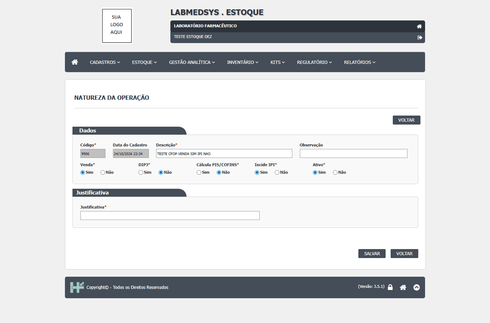
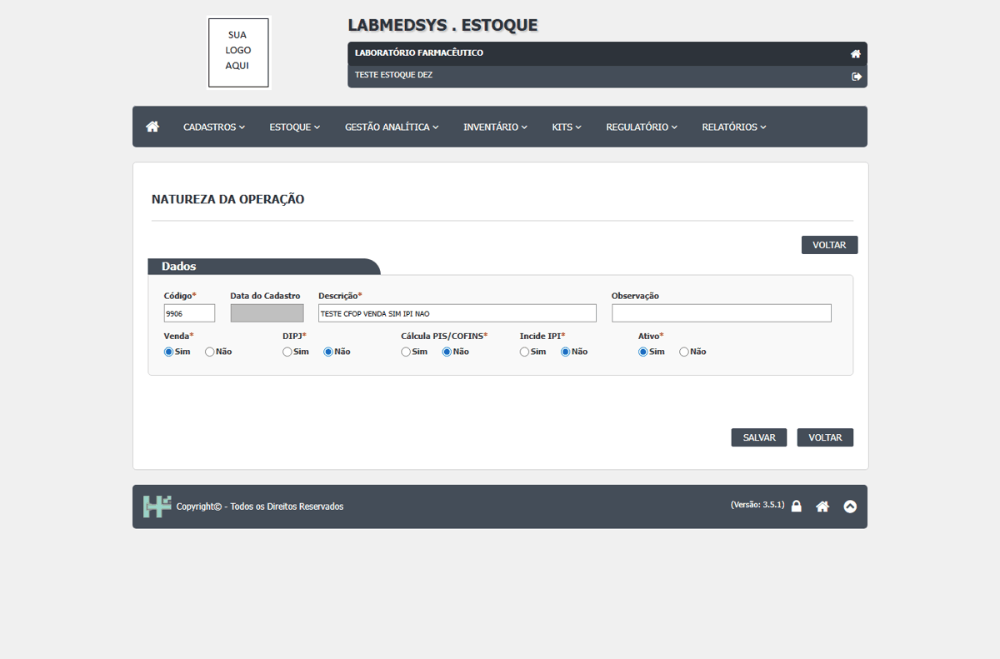
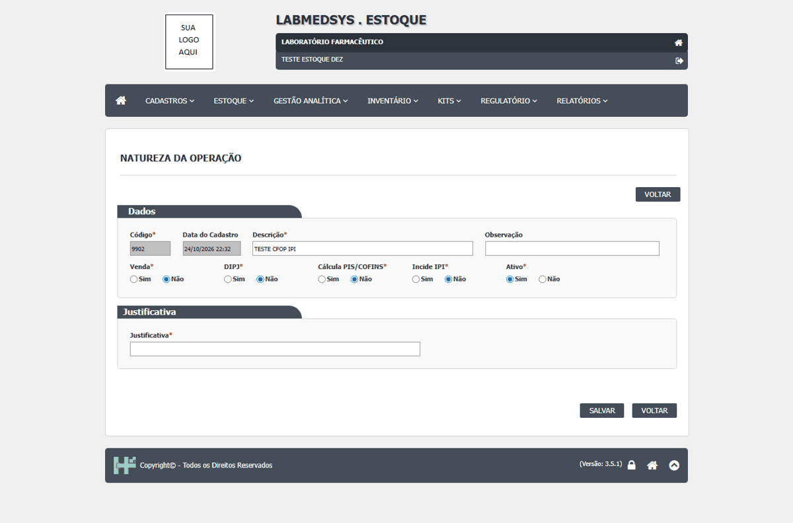

DV-EST-097 · Natureza da Operação grava o parâmetro "Incide IPI" com o valor de "Venda"
CFOP 9902 (Venda = Não, IPI = Sim) reabriu com IPI = Não. CFOP 9906 (Venda = Sim, IPI = Não) reabriu com Venda = Sim*/Não e IPI = Sim*/Não. O IPI sempre sai igual ao Venda; o parâmetro fiscal fica errado e muda o cálculo do imposto na nota.
Como reproduzir o erro, passo a passo
- Incluir o 9902 com Venda = Não e Incide IPI = Sim; salvar, reabrir e abrir o Ver Log.
Esperado
Incide IPI continua com o valor escolhido ao reabrir, e o Log só registra o que o usuário mudou.
Obtido
CFOP 9902 (Venda = Não, IPI = Sim) reabriu com IPI = Não. CFOP 9906 (Venda = Sim, IPI = Não) reabriu com Venda = Sim*/Não e IPI = Sim*/Não. O IPI sempre sai igual ao Venda; o parâmetro fiscal fica errado e muda o cálculo do imposto na nota.
Evidência (captura da tela)



DV-EST-083 · Campos que aceitam mais letras do que o banco guarda dão erro genérico, ou travam o SALVAR sem mensagem
[Classificação do Item, passo 12.3] O campo aceita até 255 letras; com 41 letras o salvamento falha com a mensagem genérica "Erro na inclusão do registro." e nada é gravado. [Natureza da Operação, passo 23.6] Com 300 letras: "Inclusão realizada com sucesso!"; com 301, 350 e 400: "Erro na inclusão do registro." e nada foi gravado. [Parâmetros do Estoque, passo 28.7] Com Tipo de Remessa = GMM, assinatura com 120 letras, origem com 100 ou parte fixa do código com 15: ao clicar em SIM a pergunta continua aberta, sem mensagem, e nada é gravado. Com a assinatura de 100 letras salvou. Os campos aceitam 150, 150 e 17 caracteres.
Como reproduzir o erro, passo a passo
- Salvar sem descrição; salvar com descrição de 41 letras.
- Digitar 350 letras na Observação e salvar.
- Com GMM, digitar título de assinatura com 120 letras, prefixo da origem com 100 e parte fixa do código com 15; salvar.
Esperado
O campo limita o texto ao que o banco guarda, ou a tela mostra uma mensagem clara do limite; nunca fica sem resposta.
Obtido
[Classificação do Item, passo 12.3] O campo aceita até 255 letras; com 41 letras o salvamento falha com a mensagem genérica "Erro na inclusão do registro." e nada é gravado. [Natureza da Operação, passo 23.6] Com 300 letras: "Inclusão realizada com sucesso!"; com 301, 350 e 400: "Erro na inclusão do registro." e nada foi gravado. [Parâmetros do Estoque, passo 28.7] Com Tipo de Remessa = GMM, assinatura com 120 letras, origem com 100 ou parte fixa do código com 15: ao clicar em SIM a pergunta continua aberta, sem mensagem, e nada é gravado. Com a assinatura de 100 letras salvou. Os campos aceitam 150, 150 e 17 caracteres.
Evidência (captura da tela)